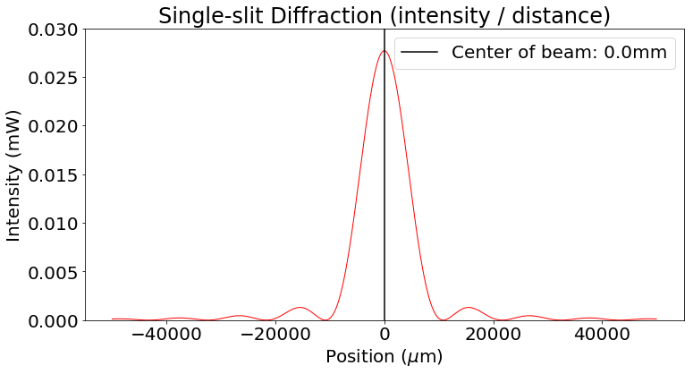

---
redirect_from:
  - "/05/2/subsection/diffraction-experiment"
interact_link: content/05/2/subsection/diffraction_experiment.ipynb
kernel_name: python3
has_widgets: false
title: |-
  A Diffraction Experiment
prev_page:
  url: /05/2/DNA-discovery.html
  title: |-
    The DNA molecule
next_page:
  url: /06-life-limits.html
  title: |-
    Life's Limits
suffix: .ipynb

comment: "***PROGRAMMATICALLY GENERATED, DO NOT EDIT. SEE ORIGINAL FILES IN /content***"
---

    <main class="jupyter-page">
    
<div class="jb_cell tag_hide_input">

<div class="cell border-box-sizing code_cell rendered">
<div class="input">

<div class="inner_cell">
    <div class="input_area">
<div class=" highlight hl-ipython3"><pre><span></span><span class="c1">#hide code segments from display</span>
<span class="kn">from</span> <span class="nn">IPython.display</span> <span class="k">import</span> <span class="n">HTML</span>
<span class="n">HTML</span><span class="p">(</span><span class="s1">&#39;&#39;&#39;&lt;script&gt;</span>
<span class="s1">code_show=true; </span>
<span class="s1">function code_toggle() {</span>
<span class="s1"> if (code_show){</span>
<span class="s1"> $(&#39;div.input&#39;).hide();</span>
<span class="s1"> } else {</span>
<span class="s1"> $(&#39;div.input&#39;).show();</span>
<span class="s1"> }</span>
<span class="s1"> code_show = !code_show</span>
<span class="s1">} </span>
<span class="s1">$( document ).ready(code_toggle);</span>
<span class="s1">&lt;/script&gt;</span>
<span class="s1">The raw code for this notebook is hidden for easier reading.</span>
<span class="s1">To toggle code display, click &lt;a href=&quot;javascript:code_toggle()&quot;&gt;here&lt;/a&gt;.&#39;&#39;&#39;</span><span class="p">)</span>
</pre></div>

</div>
</div>
</div>

<div class="output_wrapper">
<div class="output">

<div class="jb_output_wrapper }}">
<div class="output_area">


<div class="output_html rendered_html output_subarea output_execute_result">
<script>
code_show=true; 
function code_toggle() {
 if (code_show){
 $('div.input').hide();
 } else {
 $('div.input').show();
 }
 code_show = !code_show
} 
$( document ).ready(code_toggle);
</script>
The raw code for this notebook is hidden for easier reading.
To toggle code display, click <a href="javascript:code_toggle()">here</a>.
</div>

</div>
</div>
</div>
</div>

</div>
</div>

<div class="jb_cell">

<div class="cell border-box-sizing text_cell rendered"><div class="inner_cell">
<div class="text_cell_render border-box-sizing rendered_html">
<h1 id="The-Hair-Diffraction-Experiment">The Hair Diffraction Experiment<a class="anchor-link" href="#The-Hair-Diffraction-Experiment"> </a></h1><p>Diffraction is the bending of waves around an object or aperture similar to the wavelength .  When it happens it is as though the obstacle or slit the wave has to pass though emit waves in all directions.  If you follow how this waves superpose ahead of the obstacle, what you will see is a pattern of light and shadows showing the constructive and destructive interference of the waves.  These interferences are closely related to the shape of the object diffracting the waves.</p>

</div>
</div>
</div>
</div>

<div class="jb_cell tag_hide_input">

<div class="cell border-box-sizing code_cell rendered">
<div class="input">

<div class="inner_cell">
    <div class="input_area">
<div class=" highlight hl-ipython3"><pre><span></span><span class="kn">import</span> <span class="nn">numpy</span> <span class="k">as</span> <span class="nn">np</span>
<span class="kn">import</span> <span class="nn">matplotlib.pyplot</span> <span class="k">as</span> <span class="nn">plt</span>
<span class="kn">import</span> <span class="nn">math</span>
<span class="kn">from</span> <span class="nn">ipywidgets</span> <span class="k">import</span> <span class="n">interact</span><span class="p">,</span> <span class="n">interactive</span><span class="p">,</span> <span class="n">fixed</span><span class="p">,</span> <span class="n">interact_manual</span>
<span class="kn">import</span> <span class="nn">ipywidgets</span> <span class="k">as</span> <span class="nn">widgets</span>
<span class="c1"># Set default font size for plots:</span>
<span class="n">font</span> <span class="o">=</span> <span class="p">{</span><span class="s1">&#39;size&#39;</span>   <span class="p">:</span> <span class="mi">20</span><span class="p">}</span>
<span class="n">plt</span><span class="o">.</span><span class="n">rc</span><span class="p">(</span><span class="s1">&#39;font&#39;</span><span class="p">,</span><span class="o">**</span><span class="n">font</span><span class="p">)</span>

<span class="k">def</span> <span class="nf">sinc</span><span class="p">(</span><span class="n">x</span><span class="p">):</span>
    <span class="k">if</span> <span class="p">(</span><span class="n">x</span> <span class="o">!=</span> <span class="mi">0</span><span class="p">):</span>
        <span class="k">return</span> <span class="n">np</span><span class="o">.</span><span class="n">sin</span><span class="p">(</span><span class="n">np</span><span class="o">.</span><span class="n">pi</span> <span class="o">*</span> <span class="n">x</span><span class="p">)</span> <span class="o">/</span> <span class="p">(</span><span class="n">np</span><span class="o">.</span> <span class="n">pi</span> <span class="o">*</span> <span class="n">x</span><span class="p">)</span>
    <span class="k">else</span><span class="p">:</span>
        <span class="k">return</span> <span class="mi">1</span>
<span class="n">sinc</span> <span class="o">=</span> <span class="n">np</span><span class="o">.</span><span class="n">vectorize</span><span class="p">(</span><span class="n">sinc</span><span class="p">)</span>

<span class="sd">&#39;&#39;&#39;</span>
<span class="sd">slitWidth  = float(input(&quot;slitWidth: &quot;)) #2500          # 2.5mm</span>
<span class="sd">wavelength = float(input(&quot;wavelength: &quot;)) #0.650         # 650nm</span>
<span class="sd">distance   = float(eval(input(&quot;distance: &quot;))) #10.3 * 10**6  # 10.3m</span>
<span class="sd">&#39;&#39;&#39;</span>
<span class="n">slitWidth</span>  <span class="o">=</span> <span class="mi">60</span>          <span class="c1"># 2.5mm</span>
<span class="n">wavelength</span> <span class="o">=</span> <span class="mf">0.650</span>         <span class="c1"># 650nm</span>
<span class="n">distance</span>   <span class="o">=</span> <span class="mi">1</span> <span class="o">*</span> <span class="mi">10</span><span class="o">**</span><span class="mi">6</span>  <span class="c1"># 10.3m</span>

<span class="c1">#result_mm = float(input(&quot;result: &quot;))</span>
<span class="c1">#result_mm = 10.5</span>

<span class="c1">#Visualizing a single diffractor</span>
<span class="n">amplitude</span> <span class="o">=</span> <span class="mi">5</span> <span class="c1"># the power of the laser (mW) as marked on the laser point. The accuracy of this value is trivial.</span>
<span class="n">x</span> <span class="o">=</span> <span class="n">np</span><span class="o">.</span><span class="n">arange</span><span class="p">(</span><span class="o">-</span><span class="mi">50000</span><span class="p">,</span> <span class="mi">50000</span><span class="p">,</span> <span class="mi">10</span><span class="p">)</span> <span class="c1"># numerical bounds and resolution of the graph (micron)</span>
<span class="n">F</span> <span class="o">=</span> <span class="n">sinc</span><span class="p">(</span><span class="n">slitWidth</span> <span class="o">*</span> <span class="n">x</span> <span class="o">/</span> <span class="n">wavelength</span> <span class="o">/</span> <span class="n">distance</span><span class="p">)</span>
<span class="n">intensity</span> <span class="o">=</span> <span class="n">amplitude</span> <span class="o">/</span> <span class="p">(</span><span class="n">wavelength</span> <span class="o">*</span> <span class="n">distance</span><span class="p">)</span> <span class="o">*</span> <span class="p">(</span><span class="n">slitWidth</span> <span class="o">*</span> <span class="n">F</span><span class="p">)</span><span class="o">**</span><span class="mi">2</span>

<span class="n">plt</span><span class="o">.</span><span class="n">figure</span><span class="p">(</span><span class="mi">1</span><span class="p">,</span> <span class="p">(</span><span class="mi">12</span><span class="p">,</span> <span class="mi">6</span><span class="p">))</span>
<span class="n">plt</span><span class="o">.</span><span class="n">plot</span><span class="p">(</span><span class="n">x</span><span class="p">,</span> <span class="n">intensity</span><span class="p">,</span> <span class="n">linewidth</span><span class="o">=</span><span class="mi">1</span><span class="p">,</span> <span class="n">color</span><span class="o">=</span><span class="s1">&#39;r&#39;</span><span class="p">)</span> <span class="c1"># red indicates the intensity</span>
<span class="c1">#result = result_mm * 1000</span>
<span class="n">plt</span><span class="o">.</span><span class="n">axvline</span><span class="p">(</span><span class="n">x</span> <span class="o">=</span> <span class="mi">0</span><span class="p">,</span><span class="n">color</span><span class="o">=</span><span class="s1">&#39;k&#39;</span><span class="p">,</span> <span class="n">label</span><span class="o">=</span><span class="s2">&quot;Center of beam: &quot;</span><span class="o">+</span><span class="nb">str</span><span class="p">(</span><span class="mf">0.0</span><span class="p">)</span><span class="o">+</span><span class="s2">&quot;mm&quot;</span><span class="p">)</span>
<span class="c1">#plt.axvline(x = result, color=&#39;b&#39;, label=&quot;Obtained result: &quot;+str(result_mm)+&quot;mm&quot;) # blue indicated your result indicated earlier</span>
<span class="c1">#plt.xlim((0, 50000))</span>
<span class="n">plt</span><span class="o">.</span><span class="n">ylim</span><span class="p">((</span><span class="mi">0</span><span class="p">,</span> <span class="mf">0.03</span><span class="p">))</span>
<span class="n">plt</span><span class="o">.</span><span class="n">xlabel</span><span class="p">(</span><span class="sa">r</span><span class="s1">&#39;Position ($\mu$m)&#39;</span><span class="p">)</span>
<span class="n">plt</span><span class="o">.</span><span class="n">ylabel</span><span class="p">(</span><span class="sa">r</span><span class="s1">&#39;Intensity (mW)&#39;</span><span class="p">)</span>
<span class="n">plt</span><span class="o">.</span><span class="n">legend</span><span class="p">(</span><span class="n">loc</span><span class="o">=</span><span class="s1">&#39;best&#39;</span><span class="p">)</span>
<span class="n">plt</span><span class="o">.</span><span class="n">title</span><span class="p">(</span><span class="s2">&quot;Single-slit Diffraction (intensity / distance)&quot;</span><span class="p">)</span>
<span class="n">plt</span><span class="o">.</span><span class="n">show</span><span class="p">()</span>
</pre></div>

</div>
</div>
</div>

<div class="output_wrapper">
<div class="output">

<div class="jb_output_wrapper }}">
<div class="output_area">


<div class="output_png output_subarea ">

</div>

</div>
</div>
</div>
</div>

</div>
</div>

<div class="jb_cell">

<div class="cell border-box-sizing text_cell rendered"><div class="inner_cell">
<div class="text_cell_render border-box-sizing rendered_html">
<h1 id="The-Diffraction-Model">The Diffraction Model<a class="anchor-link" href="#The-Diffraction-Model"> </a></h1><p>In order to understand the variables involved in the diffraction please answer the following questions.</p>
<h2 id="Questions:">Questions:<a class="anchor-link" href="#Questions:"> </a></h2><p>1) Change the distance to the background wall.  Describe what happens
2) What is the effect of changing the width of the hair?</p>

</div>
</div>
</div>
</div>

<div class="jb_cell tag_hide_input">

<div class="cell border-box-sizing code_cell rendered">
<div class="input">

<div class="inner_cell">
    <div class="input_area">
<div class=" highlight hl-ipython3"><pre><span></span><span class="kn">import</span> <span class="nn">numpy</span> <span class="k">as</span> <span class="nn">np</span>
<span class="kn">import</span> <span class="nn">matplotlib.pyplot</span> <span class="k">as</span> <span class="nn">plt</span>
<span class="kn">import</span> <span class="nn">math</span>
<span class="kn">from</span> <span class="nn">ipywidgets</span> <span class="k">import</span> <span class="n">interact</span><span class="p">,</span> <span class="n">interactive</span><span class="p">,</span> <span class="n">fixed</span><span class="p">,</span> <span class="n">interact_manual</span>
<span class="kn">import</span> <span class="nn">ipywidgets</span> <span class="k">as</span> <span class="nn">widgets</span>
<span class="c1"># Set default font size for plots:</span>
<span class="n">font</span> <span class="o">=</span> <span class="p">{</span><span class="s1">&#39;size&#39;</span>   <span class="p">:</span> <span class="mi">20</span><span class="p">}</span>
<span class="n">plt</span><span class="o">.</span><span class="n">rc</span><span class="p">(</span><span class="s1">&#39;font&#39;</span><span class="p">,</span><span class="o">**</span><span class="n">font</span><span class="p">)</span>

<span class="k">def</span> <span class="nf">hair_diffrac</span><span class="p">(</span><span class="n">slitWidth</span><span class="p">,</span><span class="n">wavelength</span><span class="p">,</span><span class="n">distance</span><span class="p">):</span>
    <span class="sd">&#39;&#39;&#39;</span>
<span class="sd">    slitWidth  = float(input(&quot;slitWidth: &quot;)) #2500          # 2.5mm</span>
<span class="sd">    wavelength = float(input(&quot;wavelength: &quot;)) #0.650         # 650nm</span>
<span class="sd">    distance   = float(eval(input(&quot;distance: &quot;))) #10.3 * 10**6  # 10.3m</span>
<span class="sd">    &#39;&#39;&#39;</span>
    <span class="k">def</span> <span class="nf">sinc</span><span class="p">(</span><span class="n">x</span><span class="p">):</span>
        <span class="k">if</span> <span class="p">(</span><span class="n">x</span> <span class="o">!=</span> <span class="mi">0</span><span class="p">):</span>
            <span class="k">return</span> <span class="n">np</span><span class="o">.</span><span class="n">sin</span><span class="p">(</span><span class="n">np</span><span class="o">.</span><span class="n">pi</span> <span class="o">*</span> <span class="n">x</span><span class="p">)</span> <span class="o">/</span> <span class="p">(</span><span class="n">np</span><span class="o">.</span> <span class="n">pi</span> <span class="o">*</span> <span class="n">x</span><span class="p">)</span>
        <span class="k">else</span><span class="p">:</span>
            <span class="k">return</span> <span class="mi">1</span>
    <span class="n">sinc</span> <span class="o">=</span> <span class="n">np</span><span class="o">.</span><span class="n">vectorize</span><span class="p">(</span><span class="n">sinc</span><span class="p">)</span>
    <span class="c1">#slitWidth  = 60          # 2.5mm</span>
    <span class="c1">#wavelength = 0.650         # 650nm</span>
    <span class="c1">#distance   = 1 * 10**6  # 10.3m</span>

    <span class="c1">#result_mm = float(input(&quot;result: &quot;))</span>
    <span class="c1">#result_mm = 10.5</span>

    <span class="c1">#Visualizing a single diffractor</span>
    <span class="n">wavelength</span><span class="o">=</span><span class="n">wavelength</span><span class="o">*</span><span class="mf">1e-3</span> <span class="c1">#nm</span>
    <span class="n">distance</span><span class="o">=</span><span class="n">distance</span><span class="o">*</span><span class="mf">1e4</span> <span class="c1">#cm</span>
    <span class="n">amplitude</span> <span class="o">=</span> <span class="mi">5</span> <span class="c1"># the power of the laser (mW) as marked on the laser point. The accuracy of this value is trivial.</span>
    <span class="n">x</span> <span class="o">=</span> <span class="n">np</span><span class="o">.</span><span class="n">arange</span><span class="p">(</span><span class="o">-</span><span class="mi">30000</span><span class="p">,</span> <span class="mi">30000</span><span class="p">,</span> <span class="mi">10</span><span class="p">)</span> <span class="c1"># numerical bounds and resolution of the graph (mm)</span>
    <span class="n">F</span> <span class="o">=</span> <span class="n">sinc</span><span class="p">(</span><span class="n">slitWidth</span> <span class="o">*</span> <span class="n">x</span> <span class="o">/</span> <span class="n">wavelength</span> <span class="o">/</span> <span class="n">distance</span><span class="p">)</span>
    <span class="n">intensity</span> <span class="o">=</span> <span class="n">amplitude</span> <span class="o">/</span> <span class="p">(</span><span class="n">wavelength</span> <span class="o">*</span> <span class="n">distance</span><span class="p">)</span> <span class="o">*</span> <span class="p">(</span><span class="n">slitWidth</span> <span class="o">*</span> <span class="n">F</span><span class="p">)</span><span class="o">**</span><span class="mi">2</span>

    <span class="n">plt</span><span class="o">.</span><span class="n">figure</span><span class="p">(</span><span class="mi">1</span><span class="p">,</span> <span class="p">(</span><span class="mi">12</span><span class="p">,</span> <span class="mi">6</span><span class="p">))</span>
    <span class="n">plt</span><span class="o">.</span><span class="n">plot</span><span class="p">(</span><span class="n">x</span><span class="o">*</span><span class="mf">1e-3</span><span class="p">,</span> <span class="n">intensity</span><span class="p">,</span> <span class="n">linewidth</span><span class="o">=</span><span class="mi">1</span><span class="p">,</span> <span class="n">color</span><span class="o">=</span><span class="s1">&#39;r&#39;</span><span class="p">)</span> <span class="c1"># red indicates the intensity</span>
    <span class="c1">#result = result_mm * 1000</span>
    <span class="n">plt</span><span class="o">.</span><span class="n">axvline</span><span class="p">(</span><span class="n">x</span> <span class="o">=</span> <span class="mi">0</span><span class="p">,</span><span class="n">color</span><span class="o">=</span><span class="s1">&#39;k&#39;</span><span class="p">,</span> <span class="n">label</span><span class="o">=</span><span class="s2">&quot;Center of beam: &quot;</span><span class="o">+</span><span class="nb">str</span><span class="p">(</span><span class="mf">0.0</span><span class="p">)</span><span class="o">+</span><span class="s2">&quot;mm&quot;</span><span class="p">)</span>
    <span class="c1">#plt.axvline(x = result*1e-3, color=&#39;b&#39;, label=&quot;Obtained result: &quot;+str(result_mm)+&quot;mm&quot;) # blue indicated your result indicated earlier</span>
    <span class="c1">#plt.xlim((0, 50000))</span>
    <span class="n">plt</span><span class="o">.</span><span class="n">ylim</span><span class="p">((</span><span class="mi">0</span><span class="p">,</span> <span class="mf">0.006</span><span class="p">))</span>
    <span class="n">plt</span><span class="o">.</span><span class="n">xlabel</span><span class="p">(</span><span class="sa">r</span><span class="s1">&#39;Position ($mm$))&#39;</span><span class="p">)</span>
    <span class="n">plt</span><span class="o">.</span><span class="n">ylabel</span><span class="p">(</span><span class="sa">r</span><span class="s1">&#39;Intensity (mW)&#39;</span><span class="p">)</span>
    <span class="n">plt</span><span class="o">.</span><span class="n">legend</span><span class="p">(</span><span class="n">loc</span><span class="o">=</span><span class="s1">&#39;best&#39;</span><span class="p">)</span>
    <span class="n">plt</span><span class="o">.</span><span class="n">title</span><span class="p">(</span><span class="s2">&quot;Single-slit Diffraction (intensity / distance)&quot;</span><span class="p">)</span>
    <span class="n">plt</span><span class="o">.</span><span class="n">show</span><span class="p">()</span>
    <span class="k">return</span>

<span class="n">interactive</span><span class="p">(</span><span class="n">hair_diffrac</span><span class="p">,</span> <span class="n">slitWidth</span> <span class="o">=</span> <span class="p">(</span><span class="mi">20</span><span class="p">,</span><span class="mi">80</span><span class="p">,</span><span class="mi">20</span><span class="p">),</span><span class="n">wavelength</span><span class="o">=</span><span class="p">(</span><span class="mi">630</span><span class="p">,</span><span class="mi">670</span><span class="p">,</span><span class="mi">10</span><span class="p">),</span><span class="n">distance</span><span class="o">=</span><span class="p">(</span><span class="mi">1</span><span class="p">,</span><span class="mi">120</span><span class="p">,</span><span class="mi">20</span><span class="p">),</span><span class="n">continuous_update</span><span class="o">=</span><span class="kc">False</span><span class="p">)</span>
</pre></div>

</div>
</div>
</div>

<div class="output_wrapper">
<div class="output">

<div class="jb_output_wrapper }}">
<div class="output_area">


 
 
<div id="5c5b7dd9-dc6e-4131-87e4-562a3dda6372"></div>
<div class="output_subarea output_widget_view ">
<script type="text/javascript">
var element = $('#5c5b7dd9-dc6e-4131-87e4-562a3dda6372');
</script>
<script type="application/vnd.jupyter.widget-view+json">
{"model_id": "af38093edd1845ad8b607d9064a30568", "version_major": 2, "version_minor": 0}
</script>
</div>

</div>
</div>
</div>
</div>

</div>
</div>

 


    </main>
    